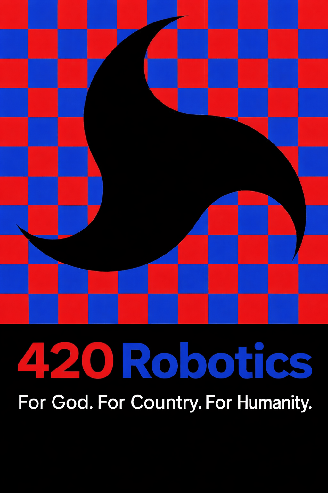

A comprehensive, phase-tiered procurement guide for building and testing a Mach-effect (MEGA Drive) propulsion prototype — compiled for a 12–18 month SpaceX-style research campaign. All parts prioritize commercial off-the-shelf availability for rapid iteration and artifact-proof testing.
All costs are 2026 USD estimates — factor in shipping and applicable taxes. For custom items, use SpaceX's in-house 3D printing and PCB fabrication. Safety is non-negotiable: high-voltage (HV) components require hardware interlocks; cryogenic systems require OSHA-compliant handling and certified PPE. Procure by phase, not all at once — every phase has a milestone gate that must be cleared before the next procurement wave is authorized.
Open-air rig with basic balance and function generator. Ideal for methodology familiarization, artifact pattern learning, and team skill building before committing to larger infrastructure. Cannot achieve vacuum testing at this tier — expect air-column artifacts in all thrust readings.
Full diagnostics package with vacuum-capable chamber, interferometric laser readout, and multi-channel DAQ. Publication-grade results are achievable at this tier if strict blind analysis protocols are maintained throughout every data collection session.
Quantum SQUID sensors, 10+ parallel device variants, AI-driven real-time artifact rejection, and cryogenic integration. This tier can support peer-reviewed publication and provides the technical foundation for a potential orbital CubeSat follow-up experiment.
Every procurement decision must be evaluated for its artifact contribution. Thermal expansion, cable torque, and EM coupling are the three primary false-positive sources historically. Mitigate these in your instrument design before a single device test is run.
High-voltage components require arc-flash rated PPE and hardware interlocks on all power rails. SQUID sensors and cryogenic setups require specialized handling training. Never skip the pre-session safety checklist, regardless of schedule pressure.
For SpaceX-scale builds, leverage 3D metal printing (SLS) for housings, in-house PCB fabs for custom driver boards, and CNC for precision mass components. Proto Labs is a reliable bridge source for custom parts when in-house capacity is not available.
The core device: a vibrating piezo stack bonded to a reaction mass, housed symmetrically to minimize artifacts. This assembly is the primary oscillator for the Woodward mass-fluctuation effect and must be built with extreme geometric precision.
| Part | Specs / Details | Source / Example | Cost (USD) | Rationale & Tier |
|---|---|---|---|---|
| Piezoelectric Stack Actuator | High-force (>100N), high-frequency (>10kHz), capacitance 1–10µF, stroke 10–100µm. Lead-free KNN-based for 2026 models (higher strain at 0.2%). Order 5–10 units for iteration. Test variants in geometry and ceramic composition across runs. | PI Ceramic (PK4JQP2) or Thorlabs (PA44LEW); Digi-Key for bulk orders | $200–500 ea. | Core oscillator for mass fluctuation. Hobbyist: 1 unit Lab: 10+ variants SpaceX: Custom textured ceramics |
| Reaction Mass | 10–100g aluminum or tungsten block, graphene-enhanced for thermal conductivity. Dimensions: 20×20×10mm, surface-polished for rigid bonding. Test at least 5 different materials across the campaign to rule out material-specific flex artifacts. | McMaster-Carr (aluminum and tungsten blocks); Amazon for graphene composite sheets | $20–100 ea. | Provides inertial asymmetry for Mach coupling. Bond with high-stiffness epoxy (JB Weld or equivalent). Run material comparison study across 5 candidates before selecting production variant. |
| Mechanical Housing | 6061 aluminum, compact total mass under 200g, symmetric design to prevent net torque. 3D-printable in metal via SLS. Include sorbothane isolation pads between device and mounting interface at all contact points. | Proto Labs for custom metal fabrication; FreeCAD for open-source design; SpaceX in-house CNC at scale | $50–300 ea. | Hobbyist: 3D print in PLA as prototype Lab: Metal for stiffness and thermal mass SpaceX: In-house CNC and custom alloys. Asymmetric housing is the most common source of spurious torque signals. |
| Bonding Epoxy / Clamp System | High-stiffness epoxy (Loctite EA 9460 recommended), threadlock for all fasteners. Test minimum 3 epoxy types and record their thermal expansion coefficients against the bonded material pair — mismatch is a thermal artifact source. | Amazon; Loctite official distributor; Omega Engineering for thermal characterization | $10–30 | Rigid bond prevents rattling artifacts that mimic thrust. Epoxy bonds degrade at elevated temperatures — characterize thermal performance before committing to a production bond recipe. |
Precise control over frequency and phase is essential for distinguishing real thrust from resonance artifacts. Monitoring electronics must be capable of correlating input power with any observed force with sub-percent accuracy.
| Part | Specs / Details | Source / Example | Cost (USD) | Rationale & Tier |
|---|---|---|---|---|
| Function Generator | 2-channel, phase-controllable, 1Hz–1MHz range, <1° phase resolution, low total harmonic distortion <5%. Must support simultaneous dual-channel output for phase reversal testing — this is the critical artifact-rejection protocol for the entire campaign. | Rigol DG812 (budget) or Keysight 33500B (precision); Digi-Key and Amazon | $300–800 | Sweeps frequencies to find resonance; dual-channel is mandatory for phase reversal artifact tests. Hobbyist: Basic Rigol Lab: Keysight for precision timing SpaceX: Phase-locked loop (PLL) custom board |
| Power Amplifier (HV Piezo Driver) | 0–200V output, current monitoring shunt on all rails, Trek 601C equivalent or higher. Must include oscilloscope integration port for real-time voltage and current waveform monitoring. Hardware interlock on overtemperature and overcurrent is mandatory. | Trek Inc.; Apex Microtechnology (PA90); Mouser Electronics | $500–2,000 | Drives piezo stack at full stroke amplitude. Power dissipation must be characterized as a function of frequency — excess heat is an artifact source. Include forced-air or liquid cooling at full-power continuous operation. |
| Microcontroller for AI Phase Control | Raspberry Pi Pico or equivalent with DAC add-ons; run TensorFlow Lite for automated frequency and phase optimization. Log all control decisions to onboard storage for post-session audit trail review. | Raspberry Pi official; Adafruit for DAC breakout boards; PyPI for TensorFlow Lite | $10–50 | ML-assisted phase tuning dramatically reduces the number of manual frequency sweep cycles needed to find optimal drive conditions. SpaceX: Integrate with Starship avionics controller codebase for operational familiarity. |
| Current Shunt / Oscilloscope | Precision inline shunt resistor (0.01Ω, 0.1% tolerance) on each power rail, paired with a 4-channel oscilloscope at minimum 100MHz bandwidth. Record V and I waveforms continuously during all thrust test sessions. | Tektronix TBS1000 or PicoScope 4444; Amazon; Digi-Key for precision shunts | $200–1,000 | Measures real power input (not just apparent power) for accurate thrust-per-watt scaling tests. Any observed thrust that does not scale with real power per Woodward's equations is an artifact by definition. |
Sensitive force measurement and vacuum isolation are the foundation of all credible results. This category includes the core instrument suite required to detect micro-Newton forces while systematically rejecting every known false-positive artifact pathway.
| Part | Specs / Details | Source / Example | Cost (USD) | Rationale & Tier |
|---|---|---|---|---|
| Torsion Balance | Horizontal carbon fiber beam, thin tungsten fiber suspension (5–50µm diameter), precision counterweight. Target resolution <0.1µN. Build 10 variants with different fiber diameters and beam lengths to characterize the noise floor distribution across the design space. | Custom build via McMaster-Carr materials; DIY designs based on published arXiv papers from Tajmar and Woodward groups | $100–500 | Core force sensor for the entire campaign. Hobbyist: Basic single unit Lab: Active electromagnetic damping added SpaceX: 10 parallel variants for noise characterization. Tungsten fiber breakage is the most common failure mode — keep 10× spare fiber stock at all times. |
| Laser Interferometer / PSD Sensor | HeNe laser at 632nm wavelength, position-sensitive detector (PSD) for beam deflection tracking. Target sub-0.1µN sensitivity at 1Hz measurement bandwidth. Temperature-stabilize the laser housing to prevent thermal drift in the laser wavelength. | Thorlabs (HRS015B laser, PDQ80A PSD) or Newport; Digi-Key for optical mounts | $300–800 | Primary readout for the torsion balance deflection. Optical readout eliminates mechanical contact artifacts. Enclose the entire optical path to prevent air currents from modulating the beam position — even minor HVAC airflow corrupts readings at this sensitivity level. |
| SQUID Force Transducer | Superconducting quantum interference device with femto-Newton force resolution, cryogenic-compatible design operating at 4K. Provides a physics-limited noise floor rather than an engineering-limited one — EM immunity is inherent rather than achieved through shielding. | Hypres Inc. or Magnicon GmbH; specialized superconductor suppliers with 8–12 week lead times | $5,000–20,000 | Quantum sensor for highest-credibility measurements. SpaceX and Lab only — skip at Hobbyist tier. SQUID sensors inherently reject EM coupling artifacts because superconducting shielding excludes all external magnetic flux from the sensing loop. |
| Vacuum Chamber / Turbopump | Desktop bell jar or cylindrical chamber, turbomolecular pump targeting 10⁻⁵ to 10⁻⁶ Torr (Pfeiffer HiPace 80 or equivalent). Foreline mechanical backing pump required. Include feedthrough ports for electrical, fiber optic, and coolant connections. | Pfeiffer Vacuum; Kurt J. Lesker Company; eBay for used/refurbished equipment at Hobbyist budgets | $1,000–5,000 | Eliminates air column thrust artifacts — an open-air torsion balance test result has zero credibility regardless of statistical significance. Essential for all budget tiers. Pressure must be logged continuously throughout every test session alongside thrust data. |
| Vibration Isolation Table | Optical breadboard with sorbothane isolation mounts (Hobbyist), or active pneumatic isolation table (Lab and above). Target >40dB isolation at 10Hz — the primary seismic interference frequency in most building environments. | Thorlabs or Newport optical tables; Amazon sorbothane pads for Hobbyist; SpaceX uses Starbase quiet-zone facilities | $200–2,000 | Seismic and building vibration are persistent artifact sources even in low-traffic facilities. Test the noise floor during business hours vs. nights and weekends — a real effect should be consistent; an artifact will correlate with building activity patterns. |
Multi-channel environmental monitoring is the backbone of credible force measurement. Every channel logged simultaneously with thrust data is another tool for falsifying or validating what the balance is reading.
| Part | Specs / Details | Source / Example | Cost (USD) | Rationale & Tier |
|---|---|---|---|---|
| Thermal Camera / Thermocouples | High-speed IR camera (FLIR A615 or equivalent, 60Hz frame rate), supplemented by K-type thermocouple probes at 10+ positions across the device assembly. Map temperature gradients during powered runs vs. dummy-load runs — patterns should differ if the device is doing something real. | FLIR Systems (A615); Digi-Key for K-type thermocouple wire and miniature connectors | $500–3,000 | Thermal photon pressure from a heated device can produce force-like deflections in a sensitive torsion balance. A thorough thermal map eliminates this artifact class and is required for publication. The IR camera also reveals uneven piezo heating that indicates resonance mode coupling issues. |
| Precision Strain Gauges | Precision foil strain gauges bonded to all structural mounting points, read via a full Wheatstone bridge configuration for temperature self-compensation. Install minimum 10 gauges per device to capture all six degrees of flex simultaneously during powered runs. | Omega Engineering; Micro-Measurements (Vishay); Mouser Electronics | $50–200 | Detects structural flexing and torque in the mounting assembly — a deflection that correlates with strain gauge readings is structural artifact, not thrust. This is one of the most underused diagnostic channels in previous MEGA Drive experiments. |
| EM Field Probes & Mu-Metal Shielding | Broadband EMF meter with 1Hz–1GHz coverage (Aaronia SPECTRAN or Trifield TF2), plus mu-metal sheet shielding (0.5mm minimum thickness) wrapped around all cable runs and around the vacuum chamber exterior walls. | Aaronia AG (SPECTRAN series) or Trifield; mu-metal sheet from Magnetic Shield Corp; Amazon | $100–500 | Rules out Lorentz force artifacts from stray EM coupling. Any thrust that correlates with EMF probe readings at drive frequency is electromagnetic artifact, not Mach effect. Wrap all cable runs symmetrically and document routing with photographs for every test session. |
| Data Acquisition System (DAQ) | LabJack T7 Pro or National Instruments USB-6341, minimum 16 analog input channels, 24-bit resolution, 1kHz simultaneous sampling across all channels. Must log thrust, input voltage, input current, chamber pressure, temperature (10+ channels), strain, and EM field data in a single synchronized file. | LabJack Corp; National Instruments; Direct from manufacturer | $300–1,000 | Synchronized multi-channel logging is the single most important data quality factor. If thrust and environmental channels are not time-synchronized to <1ms, artifact correlation analysis is unreliable. Python integration via the LabJack library is straightforward and enables live ML artifact screening. |
| Accelerometers / IMUs | High-sensitivity vibration sensors (ADXL345 for Hobbyist, PCB Piezotronics 333B50 for Lab tier) mounted at the base of the balance, on the optical table, and at the building floor level. Log all three simultaneously to distinguish seismic floor noise from balance-level vibration artifacts. | Adafruit or SparkFun (ADXL345); PCB Piezotronics; Digi-Key | $20–100 | Mechanical resonance at drive frequency is an artifact. If the accelerometer at the balance base shows a response at the piezo drive frequency, the balance is being mechanically excited — this is an artifact, regardless of what the force sensor reads. |
Simulation, analysis, and safety infrastructure are as critical as hardware. The digital twin built before any hardware runs saves weeks of physical iteration and provides a prediction baseline against which all results are measured.
| Part / Tool | Specs / Details | Source / Example | Cost (USD) | Rationale & Tier |
|---|---|---|---|---|
| Simulation Software (FEA/EM/Thermal) | COMSOL Multiphysics for coupled structural-thermal-EM simulation (preferred), or Ansys Mechanical plus Ansys HFSS for EM. FreeCAD with CalculiX as open-source alternative for Hobbyist tier. The digital twin must model piezo vibes, thermal gradients, EM fields, and GR-inspired Mach coupling via Woodward's equations in a single integrated model. | COMSOL AB (annual license); Ansys Inc. (annual license); FreeCAD open-source (free) | Free – $5,000/yr | Digital twin built in Month 0 predicts artifact "fingerprints" before any hardware is built. Every artifact discovered later should be added to the twin and used to update predictions. SpaceX: Enterprise COMSOL with Starship EM library cross-referenced. |
| ML / Statistical Analysis Tools | Python ecosystem: scipy for Bayesian inference, TensorFlow 2.x for ML artifact rejection pipeline, Jupyter Lab for interactive analysis, pandas for telemetry data management, matplotlib and plotly for visualization. Deploy TensorFlow Lite on Raspberry Pi clusters for real-time edge inference during live test sessions. | All open-source; Anaconda Distribution as package manager; PyPI for individual libraries | Free | Processes multi-channel telemetry in real time to flag artifact-correlated signals before they contaminate the dataset. Train the artifact rejection model on Phase 1 noise data before any Phase 2 device testing begins. A model trained on your specific rig's noise characteristics is far more effective than a generic filter. |
| Safety Gear & Interlocks | Hardware HV interlock (kills power rail if chamber door opens), arc-flash rated face shield and gloves (CAT 2 minimum), laser safety goggles rated for 632nm at >1mW, cryogenic gloves and face shield if using SQUID sensors at 4K. Post OSHA-compliant safety data sheets for all chemicals at the experiment station. | Amazon for PPE; Littelfuse or Pilz for hardware safety interlocks; OSHA-compliant suppliers | $50–200 | Non-negotiable for all tiers. A 200V piezo driver can deliver a lethal shock. A cryogenic leak from a SQUID cooling system can cause asphyxiation in a sealed lab space. Safety gear cost is trivial compared to personnel liability. Never conduct HV tests alone — two-person rule is mandatory. |
| Ultra-Flexible Cables & Slip Rings | Ultra-flexible HV-rated coaxial cable (Belden 9273 or equivalent), plus slip rings at all rotating or pendulum interfaces to eliminate cable-induced torque artifacts entirely. Route all cables symmetrically and document the exact routing before each session — any change in cable drape is a potential artifact change. | McMaster-Carr; Digi-Key; Moog Inc. for precision slip rings | $50–200 | Cable torque is the most-overlooked artifact in torsion balance experiments. A cable that pulls at 0.5µN when warm is an artifact that is invisible at room temperature but appears and disappears as the lab temperature cycles. Slip rings eliminate this artifact class entirely for rotating balance configurations. |
Procure in phases gated to milestone completion — do not front-load hardware purchases. For custom fabrication, leverage 3D printing and CNC rather than purchasing specialty instruments wherever feasible. These estimates cover hardware only; personnel, facility, and compute costs are separate line items.
Open-air torsion balance, basic function generator, 1 piezo stack, commercial vacuum bell jar, Python analysis environment. Suitable for artifact familiarization and methodology development. Cannot produce publication-grade results without vacuum and blind analysis additions.
Full multi-channel sensor suite, interferometric laser readout, turbopump vacuum system, 10+ device variants, multi-channel DAQ, active vibration isolation. Capable of publication-grade negative or positive results with strict blind analysis protocol throughout all sessions.
SQUID quantum sensors, cryogenic integration, AI-driven real-time artifact rejection, 50+ device variants in parallel, custom fabricated housings, orbital CubeSat preparation budget. Required for >5σ confidence positive result suitable for peer-reviewed publication in high-impact journals.
The 420 Robotics operates entirely without corporate sponsorship, government contracts, or commercial interests — by design. Our independence from the aerospace industry is what makes our research credible. We are not funded by companies that have a financial stake in the outcome of our tests.
Every dollar contributed directly funds real hardware: piezo stacks, vacuum pumps, precision sensors, and the compute infrastructure needed to run the AI artifact rejection pipeline. Your support at any level keeps this research open-access and free from conflicts of interest.
We believe the question of whether the Mach effect is real deserves a rigorous, honest answer — independent of who profits from the result.
.png)
Scan to donate via
Cash App · $420robotics For God. For Country. For Humanity.